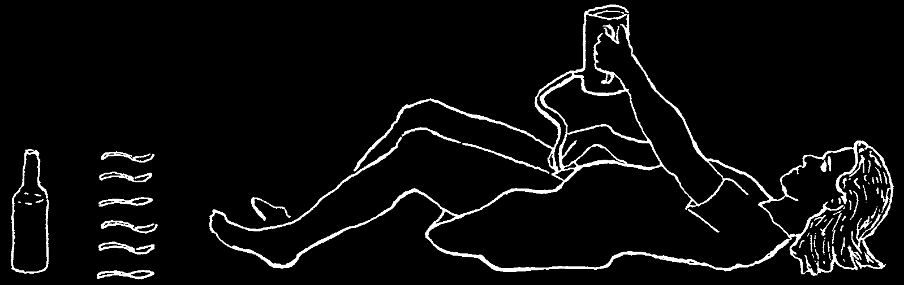
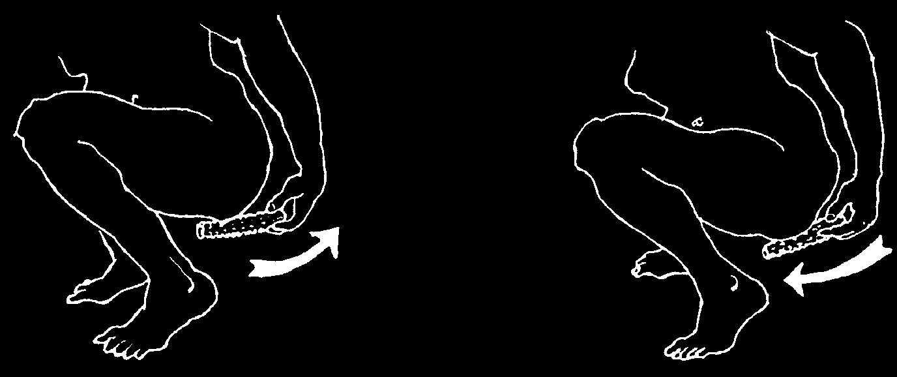
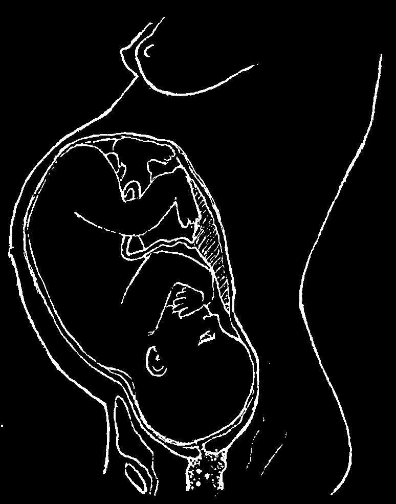
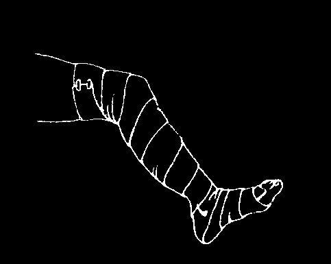
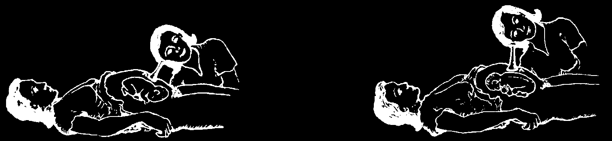
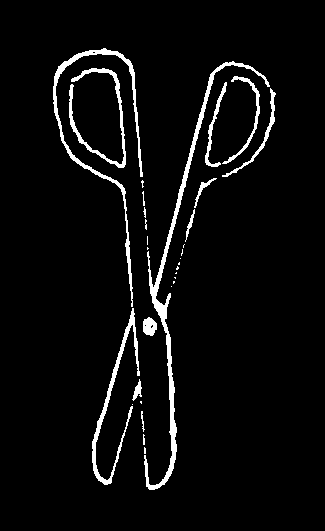
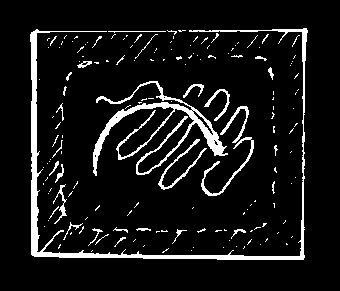
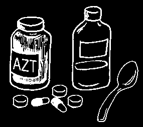
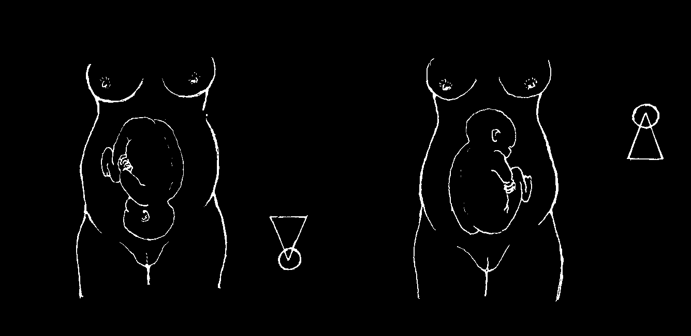
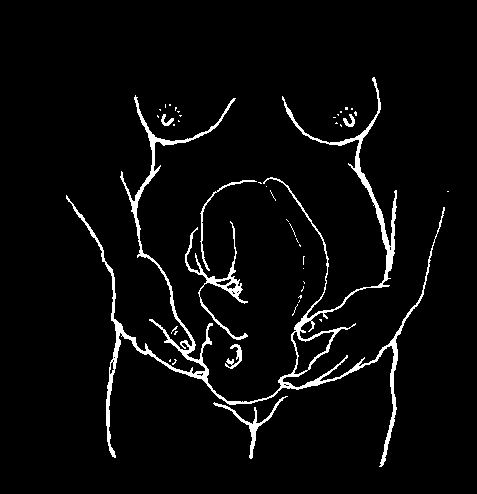

HOW TO PUT IN A CATHETER
1. Boil the
6. Cover the catheter catheter (and with a sterile lubricant any syringe
(slippery cream) like or instrument
K-Y Jelly that dissolves you may be in water (not oil or using) for
Vaseline).
15 minutes.
2. Wash well under foreskin or between
7. Pull back foreskin or open the vaginal lips.
vaginal lips and surrounding areas.
and wipe the urine opening with a sterile cotton wetted with soap.
8. Holding the foreskin back or the lips open, gently put the catheter into the urine hole.
Twist it as necessary but DO NOT FORCE IT.
3. Wash hands—if possible with surgical soap
(like Betadine).
After washing, touch only things that are sterile or very clean.
Hold the penis straight
4. Put very clean cloths at this angle.
under and around the area.
9. Push the catheter in until urine starts coming out. For a man, then push it in 3 cm. more.
Note: A woman’s
5. Put on sterile gloves urinary tube is or rub hands well with much shorter alcohol or surgical soap.
than a man’s.
IMPORTANT: If the person shows signs of urine poisoning, or if the bladder has been over-full and stretched, do not let the urine come out all at once: instead, let it out very slowly (by pinching or plugging the catheter), little by little over an hour or 2.
Sometimes a woman cannot urinate after giving birth. If more than 6 hours pass and her bladder seems full, she may need a catheter put in. If her bladder does not feel full, do not use a catheter but have her drink lots of water.
For more information on catheter use, see Disabled Village Children, Chapter 25.

PROBLEMS OF WOMEN
Vaginal Discharge
(a mucus or pus-like stuff that comes from the vagina)
All women normally have a small amount of vaginal discharge, which is clear, milky, or slightly yellow. If there is no itching or bad smell, there is probably no problem.
But many women, especially during pregnancy, suffer from a discharge often with itching in the vagina. This discharge may be caused by various infections.
Most of them are bothersome, but not dangerous. However, an infection caused by gonorrhea or chlamydia can harm a baby at birth (see p. 221).
1. A thin and foamy, greenish-yellow or whitish, foul-smelling discharge with itching. This is probably an infection of Trichomonas. It may burn to urinate.
Sometimes the genitals hurt or are swollen. The discharge may contain blood.
Treatment:
♦ It is very important to keep the genitals
IMPORTANT: Let water enter clean.
slowly during about 3 minutes.
Do not put the tube more than
♦ A vaginal wash, or douche, with warm water and distilled vinegar will help. If there
3 inches into the vagina.
is no vinegar, use lemon juice in water.
For the douche, use
6 teaspoons of vinegar in 1 liter of boiled, cooled water.
CAUTION: Do not douche in the last 4 weeks of pregnancy, or for 6 weeks after giving birth. If the discharge is troublesome, nystatin vaginal inserts may help
(see #2 on the next page).
♦ You can also use a clove of garlic as a vaginal insert. (Peel the garlic, taking care not to puncture it. Wrap it in a piece of clean cloth or gauze, and put it into the vagina.)
♦ Use the douche 2 times during the day, and each night insert a new clove of garlic. Do this for 10 to 14 days.
♦ If this does not help, use vaginal inserts that contain metronidazole or other medication recommended for Trichomonas, or take metronidazole by mouth.
For precautions and instructions, see page 368.
IMPORTANT: It is likely that the husband of a woman with Trichomonas has the infection, too, even though he does not feel anything. (Some men with Trichomonas have a burning feeling when urinating.) If a woman is treated with metronidazole, her husband should also take it by mouth at the same time.

2. White discharge that looks like cottage cheese or buttermilk, and smells like mold, mildew, or baking bread. This could be a yeast infection (moniliasis, Candida).
Itching may be severe. The lips of the vagina often look bright red and hurt. It may burn to urinate. This infection is especially common in pregnant women or in those who are sick, diabetic (p. 127), have HIV infection, or have been taking antibiotics, or birth control pills.
Treatment: Douche with vinegar-water (see p. 241) or dilute gentian violet, 2 parts gentian violet to 100 parts water (2 teaspoons to a half liter). Or use nystatin vaginal tablets or other vaginal inserts for Candida, like miconazole or clotrimazole. For dosage and instructions see page 372. Putting unsweetened yogurt in the vagina is said to be a useful home remedy to help control yeast infections. Never use antibiotics for a yeast infection. They can make it worse.
3. Thick, milky discharge with a rancid smell. This could be an infection caused by bacteria. Special tests may be needed to tell this from a Trichomonas infection.
Douche with vinegar-water (p. 241), or with povidone-iodine (Betadine: 6 teaspoons in 1 liter of water). Also, you can try inserting a clove of garlic every night for 2 weeks
(see p. 241). If none of these treatments works, try metronidazole (see p. 368).
4. Watery, brown, or gray discharge, streaked with blood; bad smell; pain in the lower belly. These are signs of more serious infections, or possibly cancer
(p. 280). If there is fever, use antibiotics (if possible, ampicillin together with tetracycline—see p. 352 and 355). Get medical help right away.
IMPORTANT: If any discharge lasts a long time, or does not get better with treatment, see a health worker.
How a Woman Can Avoid Many Infections:
1. Keep the genital area clean. When you bathe (daily if possible) wash well with mild soap.
2. Urinate after sexual contact. This helps prevent urinary infections (but will not prevent pregnancy).
3. Be sure to clean yourself carefully after each bowel movement. Always wipe from front to back:
this way
NOT
YES this way
Wiping forward can spread germs, amebas, or worms into the urinary opening and vagina. Also take care to wipe little girls’ bottoms from front to back and to teach them, as they grow up, to do it the same way.

Pain or Discomfort in the Lower Central Part of a Woman’s Belly
This can come from many different causes, which are discussed in different parts of this book. The following list, which includes a few key questions, will help you know where to look.
Possible causes of pain in the lower belly are:
1. Menstrual discomfort (p. 246). Is it worse shortly before or during the period?
2. A bladder infection (p. 234). One of the most common low mid-belly pains. Is urination very frequent or painful?
3. Pelvic inflammatory disease. This is a late stage of gonorrhea or chlamydia (p. 236), with pain in the lower belly and fever. Pelvic infection can also happen after birth, abortion, miscarriage, or inserting an IUD. Treat for gonorrhea and chlamydia, but in addition to giving the medicines on page 359, also give 500 mg. of metronidazole 3 times a day for 14 days. If the woman is using an intrauterine device
(IUD), it may need to be removed. See a health worker.
4. Problems that are related to a lump or mass in the lower part of the belly. These are discussed briefly on page 280 and include ovarian cyst and cancer.
A special exam is needed, done by a trained health worker.
5. Ectopic pregnancy (when the baby begins to develop outside the womb
(p. 280). Usually there is severe pain with irregular bleeding. The woman often has signs of early pregnancy (see p. 247), and feels dizzy and weak. Get medical help immediately; her life is in danger.
6. Complications from an abortion (p. 414). There may be fever, bleeding from the vagina with clots, belly pain, difficulty urinating, and shock. Start giving antibiotics as for childbirth fever (p. 276), and get the woman to a hospital at once. Her life is in danger.
7. An infection or other problem of the gut or rectum (p. 145). Is the pain related to eating or to bowel movements?
Some of the above problems are not serious. Others are dangerous. They are not always easy to tell apart. Special tests or examinations may be needed. If you are unsure what is causing the pain, or if it does not get better soon, seek medical help. For more information on treating women’s health problems, see Where Women
Have No Doctor.

MEN AND WOMEN WHO ARE NOT ABLE TO HAVE CHILDREN (INFERTILITY)
Sometimes a man and woman try to have children but the woman does not become pregnant. Either the man or woman may be infertile (unable to bring about pregnancy).
Often nothing can be done to make a person fertile, but sometimes something can be done, depending on the cause.
COMMON CAUSES OF INFERTILITY:
1. Sterility. The person’s body is such that he or she can never have children. Some men and women are born sterile.
2. Weaknesses or a nutritional lack. In some women severe anemia, poor nutrition, or lack of iodine may lower the chance of becoming pregnant. Or it may cause the unformed baby (embryo) to die, perhaps before the mother even knows she is pregnant (see Miscarriage, p. 281). A woman who is not able to become pregnant, or has had only miscarriages, should get enough nutritious food, use iodized salt, and if she is severely anemic, take iron pills (p. 247). These may increase her chance of becoming pregnant and having a healthy baby.
3. Chronic infection, especially pelvic inflammatory disease (see p. 243) due to gonorrhea or chlamydia, is a common cause of infertility in women. Treatment may help—if the disease has not gone too far. Prevention and early treatment of gonorrhea and chlamydia mean fewer sterile women.
4. Men are sometimes unable to make women pregnant because they have fewer sperm than is normal. It may help for the man to wait, without having sex, for several days before the woman enters her 'fertile days’ each month, midway between her last menstrual period and the next (see Counting Days Method and Mucus Method, p. 291 and 292). This way he will give her his full amount of sperm when they have sex on days when she is able to become pregnant.
WARNING: Hormones and other medicines commonly given to men or women who cannot have babies almost never do any good, especially in men. Home remedies and magic cures are not likely to help either. Be careful not to waste your money on things that will not help.
For a man or a woman who is not able to have a baby, there are still many ways to raise or support children and to lead a happy life:
• Perhaps you can arrange to care for or adopt children who are orphans or need a home. Many couples come to love such children just as if they were their own.
• Perhaps you can become a health worker or help your community in other ways. The love you would give to your children, you can give to others, and all will benefit.
• You may live in a village where people look with shame on a woman who cannot have children. Perhaps you and others can form a group to help care for people with special needs or to make other contributions to the community, and to show that having babies is not the only thing that makes a woman worthwhile.

CHAPTER
Information for Mothers and Midwives
THE MENSTRUAL PERIOD (MONTHLY BLEEDING IN WOMEN)
Most girls have their first 'period’ or monthly bleeding between the ages of
11 and 16. This means that they are now old enough to become pregnant.
The normal period comes once every 28 days or so, and lasts 3 to 6 days
However, this varies a lot in different women.
Irregular or painful periods are common in adolescent (teenage) girls. This does not usually mean there is anything wrong.
If your menstrual period is painful:
There is no need for you to
It often helps to walk around or to take hot drinks, or put stay in bed. In fact, lying and do light work or your feet in hot water.
quietly can make the pain exercises...
worse.
If it is very painful, it may help to take aspirin (p. 378) or ibuprofen (p. 379) and to lie down and put warm compresses on the belly.
During the period—as at all times—a woman should take care to keep clean, get enough sleep, and eat a well balanced diet. She can eat everything she normally eats and can continue to do her usual work. It is not harmful to have sex during the menstrual period. (However, if one of the partners has HIV, the risk of infecting the other partner may be higher.)

Signs of menstrual problems:
• Some irregularity in the length of time between periods is normal for certain women, but for others it may be a sign of chronic illness, anemia, malnutrition, tuberculosis, worsening HIV infection, or possibly an infection or tumor in the womb.
• If a period does not come when it should, this may be a sign of pregnancy. But for many girls who have recently begun to menstruate, and for women over 40, it is often normal to miss or have irregular periods. Worry or emotional upset may also cause a woman to miss her period.
• If the bleeding comes later than expected, is more severe, and lasts longer, it may be a miscarriage (see p. 281).
• If the menstrual period lasts more than 6 days, results in unusually heavy bleeding, or comes more than once a month, seek medical advice.
THE MENOPAUSE (WHEN WOMEN STOP HAVING PERIODS)
The menopause or climacteric is the time in a woman’s life when the menstrual periods stop coming. After menopause, she can no longer bear children. In general, this 'change of life’
happens between the ages of 40 and 50. The periods often become irregular for several months before they stop completely.
There is no reason to stop having sex during or after the menopause. But a woman can still become pregnant during this time. If she does not want to have more children, she should continue to use birth control for 12 months after her periods stop.
When menopause begins, a woman may think she is pregnant.
And when she bleeds again after 3 or 4 months, she may think she is having a miscarriage. If a woman of 40 or 50 starts bleeding again after some months without, explain to her that it may be menopause.
During menopause, it is normal to feel many discomforts—anxiety, distress, 'hot flashes’ (suddenly feeling uncomfortably hot), pains that travel all over the body, sadness, etc. After menopause is over, most women feel better again.
Women who have severe bleeding or a lot of pain in the belly during menopause, or who begin to bleed again after the bleeding has stopped for months or years, should seek medical help. An examination is needed to make sure they do not have cancer or another serious problem (see p. 280).
After menopause, a woman’s bones may become weaker and break more easily.
To prevent this, it helps to eat foods with calcium (see p. 116).
Because she will not have any more children, a woman may be more free now to spend time with her grandchildren or to become more active in the community. Some become midwives or health workers at this time in their lives.

PREGNANCY
Signs of pregnancy:
All these signs are normal:
• The woman misses her period (often the first sign).
• 'Morning sickness’ (nausea or feeling you are going to vomit, especially in the morning). This is worse during the second and third months of pregnancy.
• She may have to urinate more often.
• The belly gets bigger.
• The breasts get bigger or feel tender.
• 'Mask of pregnancy’ (dark areas on the
This is the normal position of the baby face, breasts, and belly).
in the mother at 9 months.
• Finally, during the fifth month or so, the child begins to move in the womb.
For more information on pregnancy and birth, see A Book for Midwives.
How to Stay Healthy during Pregnancy
♦ Most important is to eat enough to gain weight regularly especially if you are
thin. It is also important to eat well. The body needs food rich in proteins, vitamins, and minerals, especially iron (see Chapter 11).
♦ Use iodized salt to increase the chances that the child will be born alive and will not have learning difficulties. (But to avoid swelling of the feet and other problems, do not use very much salt.)
♦ Keep clean. Bathe or wash regularly and brush your teeth every day.
♦ In the last month of pregnancy, do not use a vaginal douche.
♦ Avoid taking medicines. Some medicines can harm the developing baby. As a rule, only take medicines recommended by a health worker or doctor. (If a health worker is going to prescribe a medicine, and you think that you might be pregnant, tell her so.) You can take acetaminophen, or antacids once in a while if you need them. Vitamin and iron pills are often helpful and do no harm when taken in the right dosage. Get tested for HIV. Medicines that fight HIV can prevent the spread of HIV to the developing baby (see p. 398).
♦ Do not smoke or drink during pregnancy. Smoking and drinking are bad for the mother and harm the developing baby.
♦ Stay far away from children with measles, especially German measles (see
Rubella, p. 312).
♦ Try to rest more, but also get some exercise.
♦ Avoid poisons and chemicals. They can harm the developing baby. Do not work near pesticides, herbicides, or factory chemicals—and do not store food in their containers. Try not to breathe fumes or powders from chemicals.


Minor Problems during Pregnancy
1. Nausea or vomiting: Normally, this is worse in the morning, during the second or third month of pregnancy. It helps to eat something dry, like crackers or dry bread, before you go to bed at night and before you get out of bed in the morning. Do not eat large meals but rather smaller amounts of food several times a day. Avoid greasy foods. Tea made from mint leaves also helps. In severe cases, take an antihistamine
(see p. 385) when you go to bed and when you get up in the morning.
2. Burning or pain in the pit of the stomach or chest (acid indigestion and heartburn, see p. 128): Eat only small amounts of food at one time and drink water often. Antacids can help, especially those with calcium carbonate (see p. 381). It may also help to suck hard candy. Try to sleep with the chest and head lifted up some with pillows or blankets.
3. Swelling of the feet: Rest at different times during the day with your feet up (see p. 176). Eat less salt and avoid salty foods. Tea made from maize silk (corn silk) may help (see p. 12). If the feet are very swollen, and the hands and face also swell, seek medical advice. Swelling of the feet usually comes from the pressure of the child in the womb during the last months. It is worse in women who are anemic or malnourished. So eat plenty of nutritious food.
4. Low back pain: This is common in pregnancy. It can be helped by exercise and taking care to stand and sit with the back straight (p. 174).
5. Anemia and malnutrition: Many women in rural areas are anemic even before they are pregnant, and become more anemic during pregnancy. To make a healthy baby, a woman needs to eat well. If she is very pale and weak or has other signs of anemia and malnutrition (see p. 107 and 124), she needs to eat more protein and food with iron. Beans, groundnuts, chicken, milk, cheese, eggs, meat, fish, and dark green leafy vegetables are good choices. She should also take iron pills (p. 392), especially if it is hard to get enough nutritious foods. This way she will strengthen her blood to resist dangerous bleeding after childbirth. If possible, iron pills should also contain some folic acid and vitamin C. (Vitamin C helps the body make better use of the iron.)
6. Swollen veins (varicose veins): These are common in pregnancy, due to the weight of the baby pressing on the veins that come from the legs. Put your feet up often, as high as you can (see p. 175). If the veins get very big or hurt, wrap them like this with an elastic bandage, or use elastic stockings. Take off the bandage or stockings at night.
7. Piles (hemorrhoids): These are varicose veins in the anus. They result from the weight of the baby in the womb.
To relieve the pain, kneel with the buttocks in the air like this:
Or sit in a warm bath. Also see p. 175.
8. Constipation: Drink plenty of water. Eat fruits and food with a lot of natural fiber, like cassava or bran. Get plenty of exercise. Do not take strong laxatives.
Danger Signs in Pregnancy
1. Bleeding: If a woman begins to bleed during pregnancy, even a little, this is a danger sign. She could be having a miscarriage (losing the baby, p. 281) or the baby could be developing outside the womb (ectopic pregnancy, see p. 280). The woman should lie quietly and send for a health worker.
Bleeding late in pregnancy (after 6 months) may mean the placenta (afterbirth) is blocking the birth opening (placenta previa). Without expert help, the woman could quickly bleed to death. Do not do a vaginal exam or put anything inside her vagina.
Try to get her to a hospital at once.
2. Severe anemia: The woman is weak, tired, and has pale or transparent skin
(see The Signs of Anemia, p. 124). If not treated, she might die from blood loss at childbirth. If anemia is severe, a good diet is not enough to correct the condition in time. See a health worker and get pills of iron salts (see p. 392). If possible, she should have her baby in a hospital, in case extra blood is needed.
3. High blood pressure or other signs of pre-eclampsia: Blood pressure of 140/90 or greater can be a sign of a serious problem called pre-eclampsia
(toxemia). A lot of protein in the urine, sudden weight gain, and swelling are other important signs. Pre-eclampsia can lead to seizures (convulsions, fits) and even death.
If a woman has high blood pressure, ask her to lie down and rest more often. Help her get plenty of good foods and to eat a lot of protein (p. 110). She should avoid salty packaged foods and snacks. Re-check her blood pressure in a few days.
If you cannot check for high blood pressure or protein in the urine, watch for these other signs of pre-eclampsia:
• Swollen face, or swelling all over in the morning upon awakening
• Headaches
• Dizziness
• Blurred vision
• Pain high in the belly
If her blood pressure keeps going up (to 160/110 or higher) or if she shows any of these signs — get medical help fast! If she is already having seizures, see p. 178.
HIV and Pregnancy
If the mother has HIV, HIV can spread to her baby while it is still in her womb or during birth. Medicines can help prevent the baby from getting HIV. Talk to a health worker who has experience working with people who have HIV, and see p. 398 for more information.

CHECK-UPS DURING PREGNANCY (PRENATAL CARE)
Many health centers and midwives encourage pregnant women to come for regular prenatal (before birth) check ups and to talk about their health needs. If you are pregnant and have the chance to go for these check–ups, you will learn many things to help you prevent problems and have a healthier baby.
If you are a midwife, you can provide an important service to mothers-to-be
(and babies-to-be) by inviting them to come for prenatal check-ups—or by going to see them. It is a good idea to see them once a month for the first 6 months of pregnancy, twice a month during months 7 and 8, and once a week during the last month.
Here are some important things prenatal care should cover:
1. Sharing information
Ask the mother about her problems and needs. Find out how many pregnancies she has had, when she had her last baby, and any problems she may have had during pregnancy or childbirth. Talk with her about ways she can help herself and her baby be healthy, including:
♦ Eating right. Encourage her to eat enough energy foods, and also foods rich in protein, vitamins, iron, and calcium (see Chapter 11).
♦ Good hygiene (Chapter 12 and p. 242).
♦ The importance of taking few or no medicines (p. 54)
♦ The importance of not smoking (p. 149), not drinking alcoholic drinks (p. 148), and not using drugs (p. 416 and 417).
♦ Getting enough exercise and rest.
♦ Tetanus vaccination to prevent tetanus in the newborn. (Give at the 6th, 7th, and
8th month if first time. If she has been vaccinated against tetanus before, give one booster during the 7th month.)
2. Nutrition
Does the mother look well nourished? Is she anemic? If so, discuss ways of eating better. If possible, see that she gets iron pills preferably with folic acid and vitamin C.
Advise her about how to handle morning sickness (p. 248) and heartburn (p. 128).
Is she gaining weight normally? If possible, weigh her each visit. Normally she should gain 8 to 10 kilograms during the nine months of pregnancy. If she stops gaining weight, this is a bad sign. Sudden weight gain in the last months is a sign of pre-eclampsia. If you do not have scales, try to judge if she is gaining weight by how she looks.
Or make a simple scale:
bricks or other objects of known weight


3. Minor problems
Ask the mother if she has any of the common problems of pregnancy. Explain that they are not serious, and give what advice you can (see p. 248).
4. Signs of danger and special risk
Check for each of the danger signs on p. 249. Take the mother’s pulse each visit. This will let you know what is normal for her in case she has problems later
(for example, shock from pre-eclampsia or severe bleeding). If you have a blood pressure cuff, take her blood pressure (see p. 410). And weigh her. Watch out especially for the following danger signs:
• high blood pressure (140/90 or greater)
• protein in the urine
• sudden weight gain
}
• swelling of hands and face signs of pre-eclampsia
(p. 249)
• headaches
• dizziness and blurred vision
• pain high in the belly
Some midwives may have paper 'dip sticks’ or other methods for measuring the protein and sugar in the urine. High protein may be a sign of pre-eclampsia. High sugar could be a sign of diabetes (p. 127).
If any of the danger signs appear, see that the woman gets medical help as soon as possible. Also, check for signs of special risk, page 256. If any are present, it is safer if the mother gives birth in a hospital.
5. Growth and position of the baby in the womb
Feel the mother’s womb each time she visits; or show her how to do it herself.
9 months
8 months
Normally the womb will be
7 months
2 fingers higher each month.
6 months
5 months
At 4 ½ months it is usually
4 months at the level of the navel.
3 months
Each month write down how many finger widths the womb is above or below the navel. If the womb seems too big or grows too fast, it may mean the woman is having twins. Or the womb may have more water in it than normal. If so, you may find it more difficult to feel the baby inside. Too much water in the womb means greater risk of severe bleeding during childbirth and may mean the baby is deformed.
Try to feel the baby’s position in the womb. If it appears to be lying sideways, the mother should go to a doctor before labor begins, because an operation may be needed. For checking the baby’s position near the time of birth, see page 257.

Fetoscope
6. Baby’s heartbeat (fetal heartbeat) and movement
After 5 months, listen for the baby’s heartbeat and check for movement. You can try putting your ear against the belly, but it may be hard to hear. It will be easier if you get a fetoscope.
(Or make one. Fired clay or hard wood works well.)
If the baby’s heartbeat is heard loudest
If the heartbeat is heard loudest above below the navel in the last month, the the navel, his head is probably up.
baby’s head is down and will probably
It may be a breech birth.
be born head first.
A baby’s heart beats about twice as fast as an adult’s. If you have a watch with a second hand, count the baby’s heartbeats. From 120 to 160 per minute is normal.
If less than 120, something is wrong. (Or perhaps you counted wrong or heard the mother’s heartbeat. Check her pulse. The baby’s heartbeat is often hard to hear. It takes practice.)
7. Preparing the mother for labor
As the birth approaches, see the mother more often. If she has other children, ask her how long labor lasted and if she had any problems. Perhaps suggest that she lie down to rest after eating, twice a day for an hour each time. Talk with her about ways to make the birth easier and less painful (see the next pages). You may want to have her practice deep, slow breathing, so that she can do this during the contractions of labor.
Explain to her that relaxing during contractions, and resting between them, will help her save strength, reduce pain, and speed labor.
If there is any reason to suspect the labor may result in problems you cannot handle, send the mother to a health center or hospital to have her baby. Be sure she is near the hospital by the time labor begins.
HOW A MOTHER CAN TELL THE DATE
WHEN SHE IS LIKELY TO GIVE BIRTH:
Start with the date the last menstrual period began, subtract 3 months, and add 7 days. For example, suppose your last period began May 10.
May 10 minus 3 months is February 10, plus 7 days is February 17.
The baby is likely to be born around February 17.
8. Keeping records
To compare your findings from month to month and see how the mother is progressing, it helps to keep simple records. On the next page is a sample record sheet. Change it as you see fit. A larger sheet of paper would be better. Each mother can keep her own record sheet and bring it when she comes for her check-up.
ANUS TET ACCINEV
1st
2nd or booster rd3) the navel?)
SIZE OF WOMB (how many fingers above (+) or below (–
–
–
–
+
+
+
+
+
+
+
+
+
+
+
TH
POSITION OF BABY IN WOMB
THS
IN
SUGAR
URINE *
IN
PROTEIN
URINE *
mation.
TE OF LAST CHILDBIR
*
DA
BLOOD PRESSURE
)e
PROBLEMS WITH OTHER BIR
or
WEIGHT (estimate measur
.
AGES
TEMP
AL CARET
PULSE
e?
TH
(wher
SWELLING
how much?)
TE FOR BIR
RECORD OF PRENA
DANGER SIGNS (see p. 249)
e?)
NUMBER OF CHILDREN
PROBABLE DA
(how
ANEMIA
sever
TH e included for midwives who have means of measuring or testing for this infor
AND
GENERAL HEAL
MINOR PROBLEMS
AGE
* These ar tbeat
}
T n s hear movements
WHA OFTEN
ning tbur tness eath
HAPPENS
edness,irt nausea, and mor sickness womb at level of the navel baby’ & 1st some swelling of feet constipation hear varicose veins shor of br equentfr urination baby moves lower in belly
}
TE DA OF VISIT
TE OF LAST MENSTRUAL PERIOD
TH
NAME
DA
month
d week)
d week)
d week)
BIR
7 (1st week)
(3r
8 (1st week)
(3r
9 (1st week)
(2nd week)
(3r
(4th week)


THINGS A MOTHER SHOULD HAVE READY BEFORE GIVING BIRTH
Every pregnant woman should have the following things ready by the seventh month of pregnancy:
A lot of very clean cloths or rags.
A new razor blade. (Do not unwrap until you are ready to cut the umbilical cord.)
An antiseptic soap (or any soap).
(If you do not have a new razor blade, have clean, rust-free scissors ready.
Boil them just before cutting the cord.)
A clean scrub brush for cleaning the hands and fingernails.
Two bowls—1 for washing hands, 1 for catching and examining the afterbirth.
Alcohol for rubbing hands after washing
Two ribbons or strips of clean cloth them.
for tying the cord.
Both patches and
Clean cotton.
ribbons should be wrapped and sealed in paper packets and then baked in an oven or ironed.






Additional Supplies for the Well-Prepared Midwife or Birth Attendant
Flashlight (torch).
Fetoscope—or fetal stethoscope—for listening to the baby’s heartbeat through the mother’s belly.
Suction bulb for sucking
Blunt-tipped scissors for cutting the mucus out of the baby’s cord before the baby is all the way nose and mouth.
born (extreme emergency only).
Two clamps (hemostats) for
Sterile syringe and needles.
clamping the umbilical cord or clamping bleeding veins from tears of birth opening.
Rubber or plastic gloves (that can be sterilized by boiling, see p. 74) to wear while examining the woman, while the baby is coming out, when sewing
Several injections of oxytocin tears in the birth opening, and or ergonovine, or tablets of for catching and examining misoprostol (see p. 390 and 391).
afterbirth.
Sterile needle and gut thread for sewing tears in the birth opening.
HIV medicines for mother and baby if mother or father has HIV
(see p. 398).
Tetracycline or erythromycin eye ointment for the baby’s eyes to prevent dangerous infection (see p. 221).

PREPARING FOR BIRTH
Birth is a natural event. When the mother is healthy and everything goes well, the baby can be born without help from anyone. In a normal birth, the less the midwife or birth attendant does, the more likely everything will go well.
Difficulties in childbirth do occur, and sometimes the life of the mother or child may be in danger. If there is any reason to think that a birth may be difficult or dangerous, a skilled midwife or experienced doctor should be present.
CAUTION: If you have a fever, cough, sore throat, or sores or infections on your skin at the time of the birth, it would be better for someone else to deliver the baby.
Signs of Special Risk that Make it Important that a Doctor or
Skilled Midwife Attend the Birth—if Possible in a Hospital:
• If regular labor pains begin more than 3 weeks before the baby is expected.
• If the woman begins to bleed before labor.
• If there are signs of pre-eclampsia (see p. 249).
• If the woman is suffering from a chronic or acute illness.
• If the woman is very anemic or if her blood does not clot normally
(when she cuts herself).
• If she is under 15 or over 40, or if it is her first pregnancy and she is over 35.
• If she has had more than 5 or 6 babies.
• If she is especially short or has narrow hips (p. 267).
• If she has had serious trouble or severe bleeding with other births.
• If she has diabetes or heart trouble.
• If she has a hernia.
• If it looks like she will have twins (see p. 269).
• If it seems the baby is not in a good position (head down) in the womb.
• If the bag of waters breaks and labor does not begin within a few hours.
(The danger is even greater if there is fever.)
• If the baby is still not born 2 weeks after 9 months of pregnancy.
THE BIRTHS WITH THE GREATEST CHANCE OF PROBLEMS ARE:
the first birth and the last births after having many children



